Modern LLM
inference systemsСовременные системы
LLM-инференса
Why one correct generation becomes a queueing, lifecycle, and reliability problem in production.
Почему одна правильная генерация превращается в продакшене в задачу очередей, жизненных циклов и надежности.

At 08:59 the demo passed. At 09:00 sixty-four clients arrived—and the system began completing work nobody still wanted.В 08:59 демо прошло. В 09:00 пришли 64 клиента — и система начала выполнять работу, которая была никому не нужна.
One request → one production systemОдин запрос → одна продакшен-система
Six decisionsШесть решенийBy the end, you can diagnose—not guessВ конце курса вы диагностируете — а не угадываете
Observable outcomesНаблюдаемые результатыThe 64-client outcomeИтог на 64 клиентах
Measured T4 experimentИзмеренный эксперимент на T4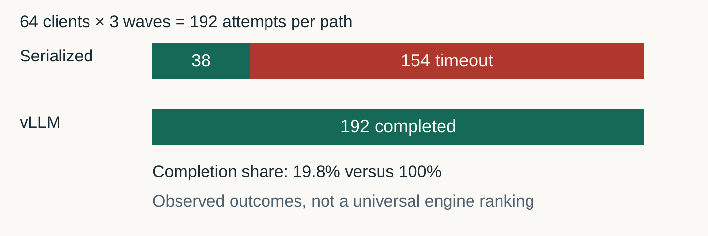
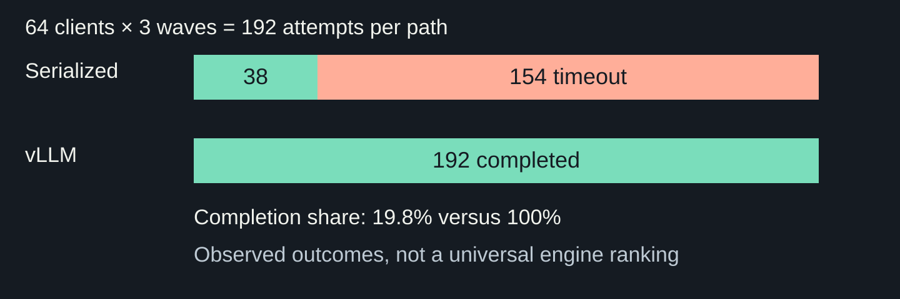
Serving is a promise with a workload attachedСервинг — это обещание с приложенной нагрузкой
Working definitionРабочее определениеRemove the workload and the promise is unfalsifiable. Remove failure policy and the promise fails exactly when it matters.Уберите нагрузку — обещание неопровержимо. Уберите политику отказов — оно рушится ровно тогда, когда важно.
Four questions before any optimizationЧетыре вопроса до любой оптимизации
The diagnostic frameДиагностическая рамка| QuestionВопрос | EvidenceСвидетельства | Typical mistakeТипичная ошибка |
|---|---|---|
| Where?Где? | trace and component boundaryтрейс и границы компонентов | blame “the model”винить «модель» |
| When?Когда? | queue/prefill/decode timestampsметки времени очереди/prefill/decode | report one latencyсообщать одну латентность |
| Under what load?Под какой нагрузкой? | arrival process + token distributionsпроцесс прихода + распределения токенов | say “concurrency 32”говорить «конкурентность 32» |
| What happens on failure?Что происходит при отказе? | deadline, cancel, retry, admission policyдедлайн, отмена, ретрай, политика допуска | let queues growпозволять очередям расти |
The model call is a stage. The product is the controlled flow around it.Вызов модели — это этап. Продукт — контролируемый поток вокруг него.
Draw the system boundaryПровести границу системы
If you cannot point to the queue, you cannot explain the latency.Если вы не можете указать на очередь, вы не объясните латентность.
Inference is computation; serving is coordinationИнференс — вычисления; сервинг — координация
Do not collapse the layersНе схлопывайте слоиInferenceИнференс
- tokenize inputsтокенизировать входы
- run model forward passesгонять forward pass модели
- sample next tokensсэмплировать следующие токены
- stop on a termination ruleостановиться по правилу завершения
ServingСервинг
- authenticate, admit, queue, scheduleаутентифицировать, пускать, ставить в очередь, планировать
- stream, cancel, retry, rate-limitстримить, отменять, ретраить, лимитировать
- load, warm, drain, roll backзагружать, греть, дренировать, откатывать
- measure promises by tenant/workloadмерить обещания по тенанту/нагрузке
Where did 154 requests time out?Где 154 запроса словили таймаут?
T4 case study · step with →Кейс T4 · шаги по стрелке →A measured T4 wave sent 64 simultaneous requests, repeated three times: 192 attempts per server. Follow one wave across the boundaries.Измеренная волна T4 послала 64 одновременных запроса, повторено трижды: 192 попытки на сервер. Проведите одну волну через все границы.
Both endpoints streamed chat completions. The client waited at most 60 seconds; a working HTTP route did not prove the service could absorb the wave.Оба эндпоинта стримили chat completions. Клиент ждал максимум 60 секунд; работающий HTTP-маршрут не доказывал, что сервис переварит волну.
The serialized baseline offered no effective overload gate: 154 of 192 requests timed out at 64 clients. An early, explicit rejection would be more honest than a silent wait.Серийный бейзлайн не имел действенного гейта перегрузки: 154 из 192 запросов получили таймаут на 64 клиентах. Ранний явный отказ честнее молчаливого ожидания.
The baseline serialized generation behind one lock. vLLM completed all 192 requests in the same 64-client, three-repeat workload.Бейзлайн сериализовал генерацию за одним локом. vLLM завершил все 192 запроса в той же нагрузке: 64 клиента, три повтора.
Both paths served pinned Qwen2.5-1.5B-Instruct in FP16 on the same T4. The model and GPU alone cannot explain the difference.Оба пути обслуживали закрепленную Qwen2.5-1.5B-Instruct в FP16 на той же T4. Модель и GPU сами по себе разницу не объясняют.
At 64 clients, p95 TTFT among successful requests was 53.251 s for the baseline versus 0.523 s for vLLM. Failures are counted separately.На 64 клиентах p95 TTFT по успешным запросам: 53.251 s у бейзлайна против 0.523 s у vLLM. Отказы считаются отдельно.
Measured teaching demo · method and raw recordsИзмеренное учебное демо · метод и сырые записи
Four requests from one waveЧетыре запроса из одной волны
Selected measured T4 requestsВыбранные измеренные запросы T4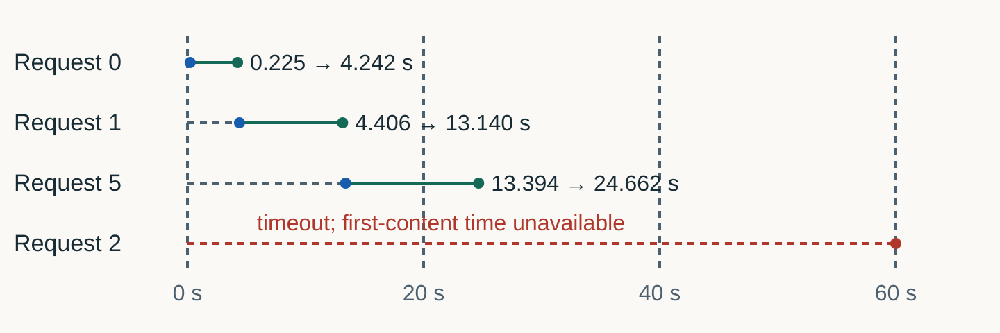
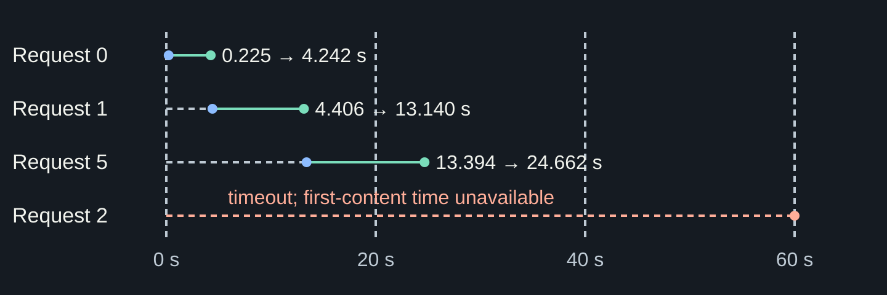
Scheduling at token-step boundariesПланирование на границах токен-шагов
Illustrative scheduleИллюстративное расписание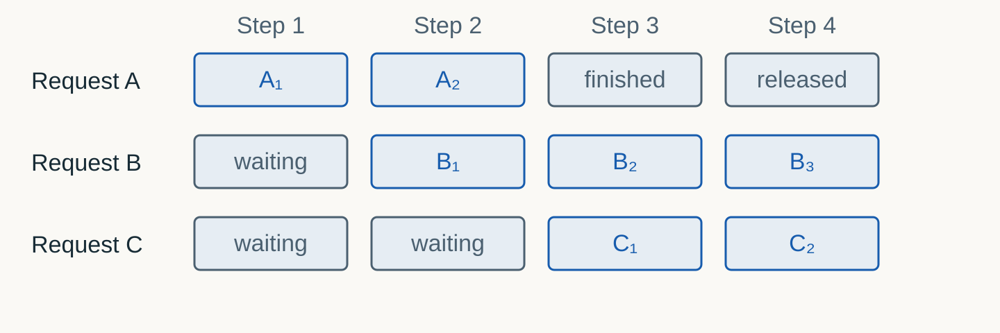
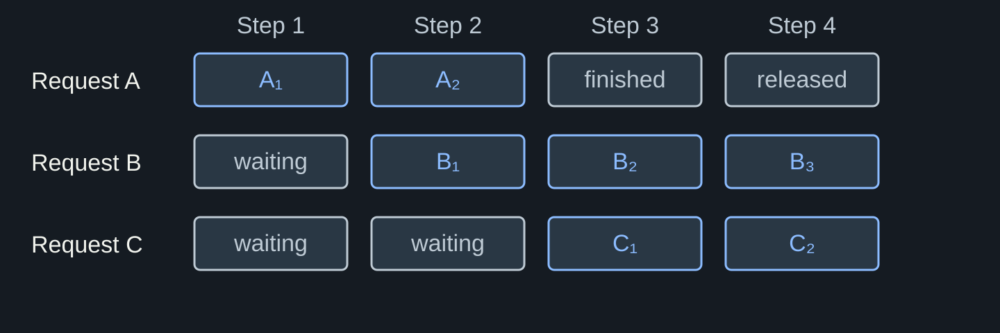
Shared model, separate request stateОбщая модель, отдельное состояние запросов
Logical state mapКарта логических состояний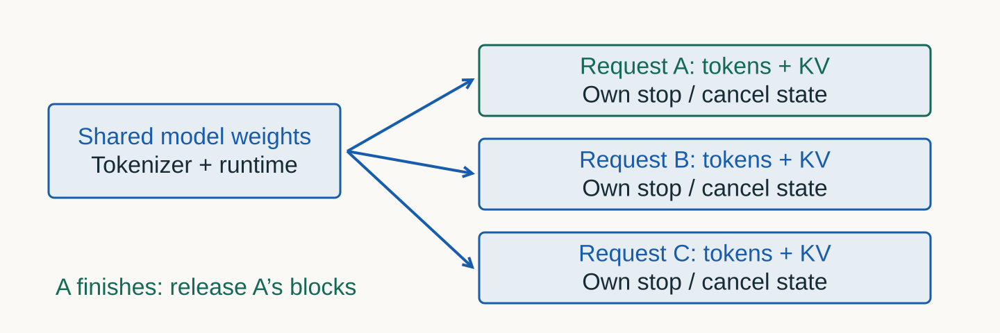
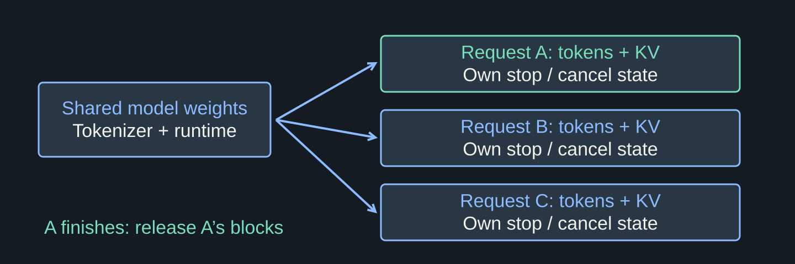
Separate the three planesРазделите три плоскости
Reason about changeРассуждайте об изменениях| PlaneПлоскость | CarriesНесет | Failure exampleПример отказа |
|---|---|---|
| DataДанные | prompts, tokens, streamsпромпты, токены, стримы | backpressure lostбэкпрешер потерян |
| ControlУправление | routing, rollout, scale, configмаршрутизация, роллаут, масштаб, конфиг | traffic sent before readyтрафик отправлен до готовности |
| ObservabilityНаблюдаемость | metrics, traces, logs, profilesметрики, трейсы, логи, профили | wrong denominator hides failureневерный знаменатель прячет отказ |
Same model, different operating problemТа же модель, другая эксплуатационная задача
Online vs offlineОнлайн против офлайнаOnlineОнлайн
- arrivals are externally timedмоменты прихода заданы извне
- per-request deadlines matterважны дедлайны на запрос
- streaming and cancellation matterважны стриминг и отмена
- capacity headroom buys reliabilityзапас емкости покупает надежность
Offline batchОфлайн-батч
- backlog is controlledбэклог контролируем
- completion horizon dominatesдоминирует горизонт завершения
- reordering is often acceptableперепорядок часто допустим
- high utilization can be rationalвысокая утилизация может быть рациональна
Common misconceptionЧастое заблуждение
“We put FastAPI around it”«Мы обернули это FastAPI»“The endpoint is concurrent, therefore the model service is concurrent.”«Эндпоинт конкурентный — значит, и модельный сервис конкурентный.»
Generation and delivery clocksЧасы генерации и доставки
Illustrative event orderИллюстративный порядок событий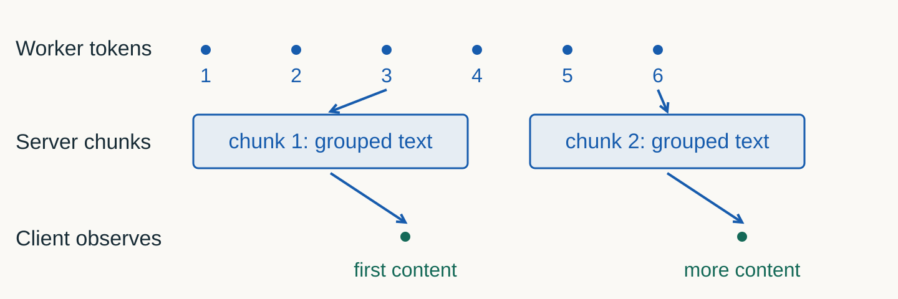
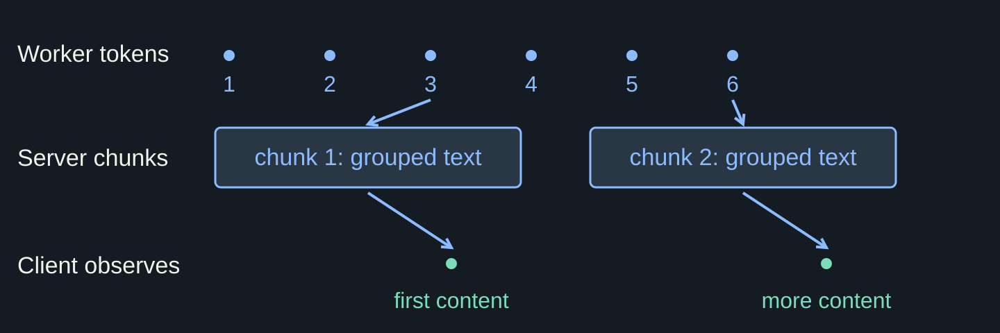
Cancellation and release acknowledgementОтмена и подтверждение освобождения
Illustrative lifecycleИллюстративный жизненный цикл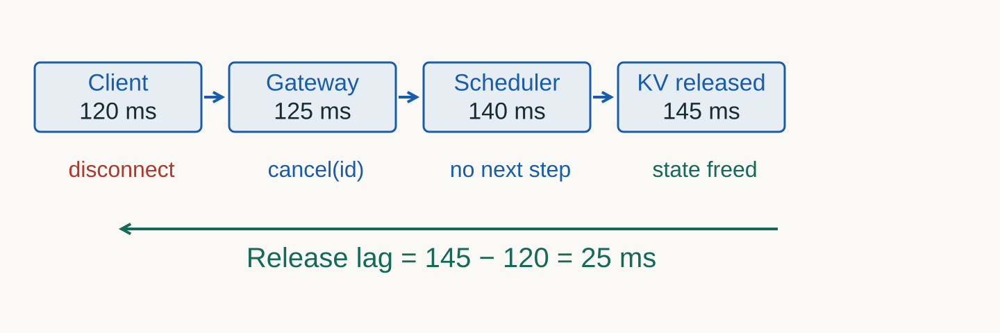
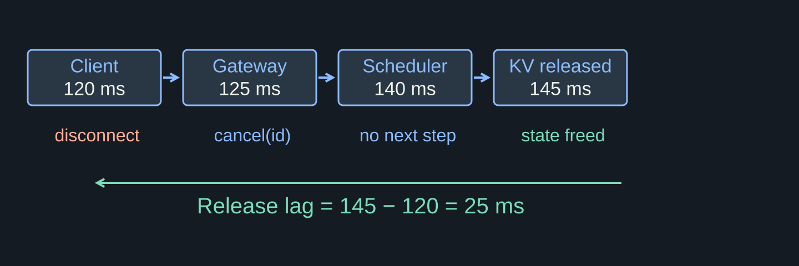
Every state needs an owner and a release eventУ каждого состояния есть владелец и событие освобождения
Lifecycle tableТаблица жизненного цикла| StateСостояние | OwnerВладелец | Release eventСобытие освобождения |
|---|---|---|
| socket / streamсокет / стрим | gatewayшлюз | final chunk or disconnectпоследний чанк или разрыв |
| queue entryэлемент очереди | admission/schedulerдопуск/планировщик | dispatch, expiry, cancellationотправка, истечение, отмена |
| KV blocksKV-блоки | engineдвижок | finish, abort, evictionзавершение, аборт, вытеснение |
| traceтрейс | telemetry pipelineтелеметрический конвейер | export or sampled dropэкспорт или сэмплированное отбрасывание |
Traffic begins after readinessТрафик начинается после готовности
Illustrative deployment statesИллюстративные состояния деплоя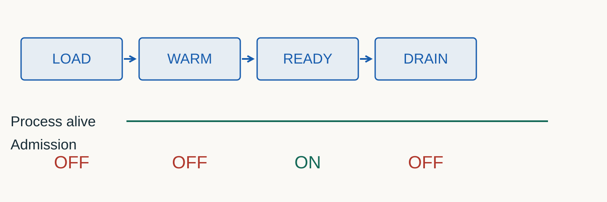
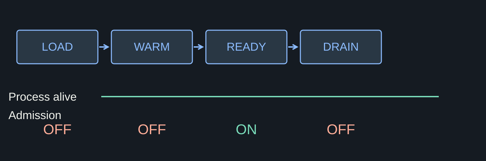
Boundary checklist: can you point to each one?Чек-лист границ: можете указать на каждую?
Stop and auditОстановитесь и проверьте| BoundaryГраница | Required eventТребуемое событие | Required policyТребуемая политика |
|---|---|---|
| edge → admissionedge → допуск | request receivedзапрос получен | quota/deadline checkпроверка квоты/дедлайна |
| admission → schedulerдопуск → планировщик | accepted/enqueuedпринят/в очереди | bounded capacityограниченная емкость |
| scheduler → workerпланировщик → воркер | first scheduled stepпервый запланированный шаг | fairness/preemptionсправедливость/вытеснение |
| worker → streamворкер → стрим | first/final tokenпервый/последний токен | backpressure/cancelбэкпрешер/отмена |
Account for timeУчесть время
One latency number erases the mechanism.Одно число латентности стирает механику.
Put timestamps on the request clockПоставьте метки времени на часы запроса
Five observable eventsПять наблюдаемых событийWhere did the first 323 ms go?Куда ушли первые 323 ms?
Interactive sequence · budget 300 msИнтерактивная последовательность · бюджет 300 msTTFT: account for every wait before first contentTTFT: учтите каждое ожидание до первого контента
Client clock · illustrative serial decompositionЧасы клиента · иллюстративная серийная декомпозицияPrefill consumes the known promptPrefill съедает известный промпт
Illustrative token sequenceИллюстративная последовательность токенов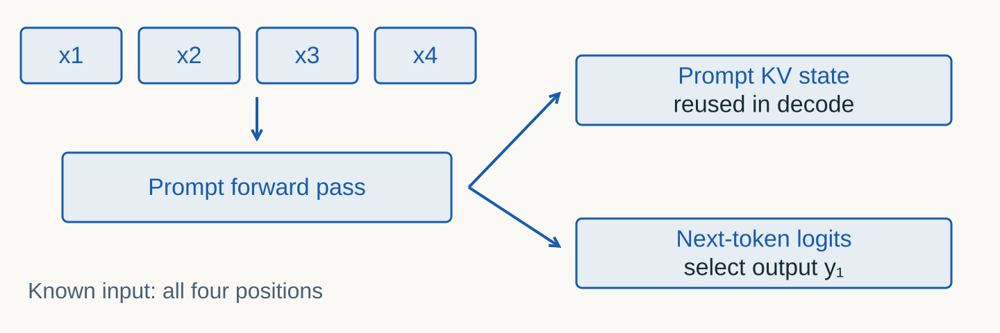
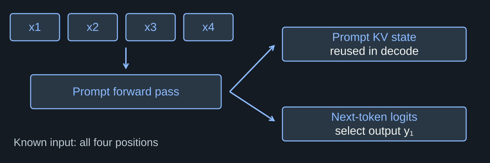
One output chain advances sequentiallyОдна цепочка вывода движется последовательно
Illustrative token sequenceИллюстративная последовательность токенов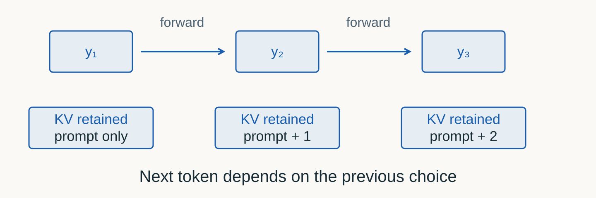
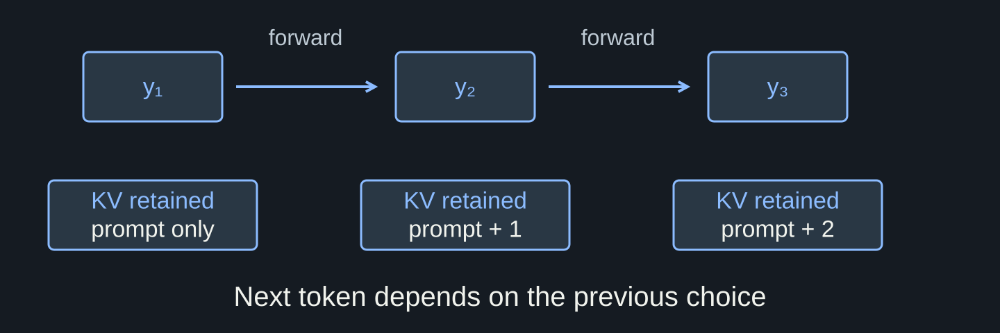
Count the gaps after the first tokenСчитайте промежутки после первого токена
Illustrative trace · final content, not terminal acknowledgementИллюстративный трейс · последний контент, а не финальное подтверждениеName the metric and its intervalНазовите метрику и ее интервал
No overloaded “latency”Никакой перегруженной «латентности»| MetricМетрика | Clock intervalИнтервал часов | User questionВопрос пользователя |
|---|---|---|
| TTFT | request → first visible tokenзапрос → первый видимый токен | When does it start?Когда начинается? |
| ITL | token i → token i+1токен i → токен i+1 | Does it stutter?Есть ли подергивания? |
| TPOT | post-first-token duration / gapsдлительность после первого токена / промежутки | What is average cadence?Каков средний темп? |
| E2E | request → final byteзапрос → последний байт | When is it complete?Когда завершено? |
Common metric trapЧастая ловушка метрик
State the denominatorНазовите знаменатель“TPOT = 22 ms.”«TPOT = 22 ms.»
A percentile needs a populationПерцентилю нужна популяция
p99 of what?p99 чего?Valid statementКорректная формулировка
p99 TTFT among all admitted chat requests in region A during 10:00–10:15, with failures reported separately.p99 TTFT среди всех допущенных chat-запросов в регионе A за 10:00–10:15, с отказами, сообщенными отдельно.
Invalid shortcutНекорректный шорткат
“Latency p99 = 1.2 s” with no phase, route, tenant, window, sampling rule, or failure treatment.«Латентность p99 = 1.2 s» без фазы, маршрута, тенанта, окна, правила сэмплирования и обращения с отказами.
Goodput counts answers that fulfil the promiseGoodput считает ответы, исполняющие обещание
One observation window · illustrative countsОдно окно наблюдения · иллюстративные счетчикиUseful answers in one minuteПолезные ответы за одну минуту
Illustrative nested populationsИллюстративные вложенные популяции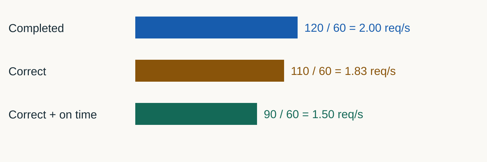
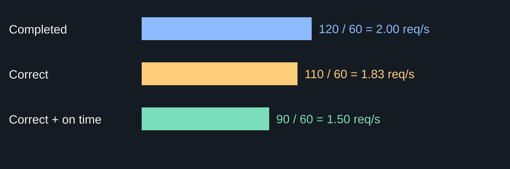
Requests/s and tokens/s answer different questionsRequests/s и tokens/s отвечают на разные вопросы
Keep bothДержите обаRequest throughputThroughput запросов
Sensitive to output-length mix. Useful for product capacity when request classes are fixed.Чувствителен к смеси длин выходов. Полезен для продуктовой емкости, когда классы запросов фиксированы.
Token throughputThroughput токенов
Exposes generation work, but can rise while user-visible goodput falls.Показывает работу генерации, но может расти, пока видимый пользователю goodput падает.
One symptom, three possible causesОдин симптом, три возможные причины
Constructed 2-second tracesСконструированные 2-секундные трейсы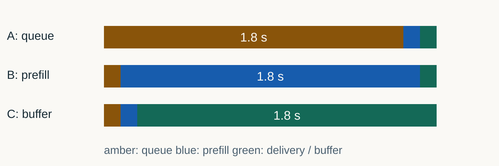
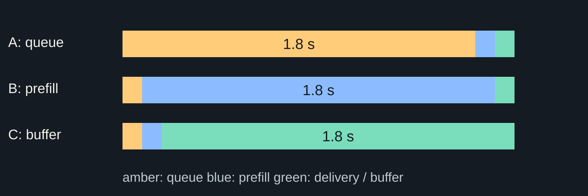
Trace durations; do not subtract unrelated clocksДлительности из трейса; не вычитайте чужие часы
Measurement hygieneГигиена измеренийSafeБезопасно
- monotonic clock within one processмонотонные часы внутри одного процесса
- span duration recorded by ownerдлительность спана пишет его владелец
- synchronized clocks with known errorсинхронизированные часы с известной ошибкой
UnsafeОпасно
- client wall clock minus server wall clockнастенные часы клиента минус настенные часы сервера
- mix milliseconds and secondsмешать миллисекунды с секундами
- derive queue time from rounded logsвыводить время очереди из округленных логов
A real request has more than one clockУ реального запроса не одни часы
Topic 01 · RTX 5070 Ti instructor runТема 01 · прогон преподавателя на RTX 5070 Ti| ObservationНаблюдение | Measured valueИзмеренное значение | Valid inferenceКорректный вывод |
|---|---|---|
| Model loadЗагрузка модели | 4.51 s | exclude from warm request latencyисключить из латентности теплого запроса |
| 43 input → 63 output tokens43 входных → 63 выходных токена | 1.395 s non-streaming1.395 s без стриминга | one local request, no server queueодин локальный запрос, без серверной очереди |
| First nonempty text chunkПервый непустой текстовый чанк | 0.036 s | not token-level TTFTне токен-уровневый TTFT |
| Complete streamed responseПолный стриминговый ответ | 1.293 s | not comparable as a p95не сравнимо как p95 |
Pinned Qwen2.5-0.5B FP16 · raw teaching evidence · one request, not a capacity test.Закрепленная Qwen2.5-0.5B FP16 · сырые учебные данные · один запрос, не тест емкости.
Specify the loadЗадать нагрузку
A benchmark without an arrival process is a demo.Бенчмарк без процесса прихода — это демо.
Who controls the next arrival?Кто задает приход?
Illustrative traffic clocksИллюстративные часы трафика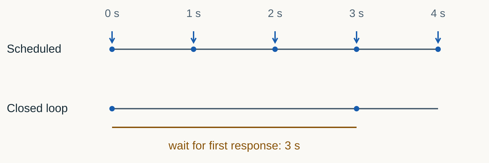
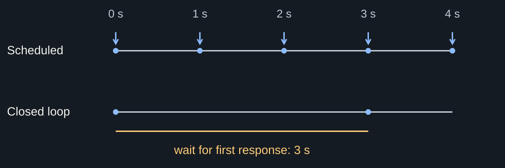
A closed-loop client slows its own offered loadЗамкнутый клиент замедляет свою же нагрузку
Fixed population · one outstanding request per userФиксированная популяция · один незавершенный запрос на пользователя“Concurrency 32” is not a workload«Конкурентность 32» — это не нагрузка
Missing dimensionsНедостающие измерения“We tested at concurrency 32.”«Мы тестировали на конкурентности 32.»
Write the workload as a vectorЗаписывайте нагрузку как вектор
Minimum specificationМинимальная спецификация| DimensionИзмерение | ExampleПример | Why it mattersПочему это важно |
|---|---|---|
| arrivalsвходящие запросы | Poisson, 8 req/sПуассон, 8 req/s | burst and queue formationбурст и образование очереди |
| inputвход | p50 512, p95 4096 tokensp50 512, p95 4096 tokens | prefill work/stateработа/состояние prefill |
| outputвыход | empirical distribution, cap 256эмпирическое распределение, потолок 256 | decode residenceжизнь в decode |
| policyполитика | deadline 5 s, no retryдедлайн 5 s, без ретрая | useful demandполезный спрос |
Little’s Law: rate × residence = in-flight requestsЗакон Литтла: скорость × время жизни = запросы в полете
One boundary · the same request population · long-run meansОдна граница · та же популяция запросов · средние на длинном пробегеRate, residence and average populationСкорость, время жизни и средняя популяция
Stable illustrative averagesУстойчивые иллюстративные средние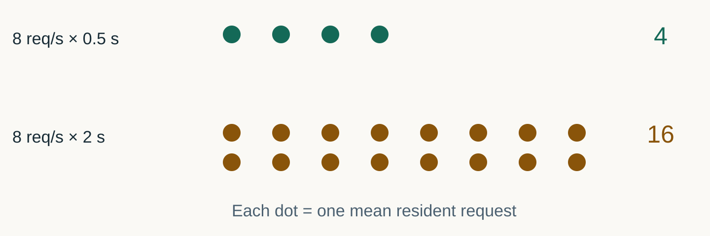
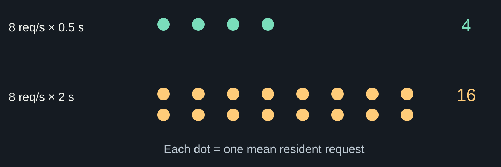
Little's Law is an identity—not a capacity modelЗакон Литтла — тождество, а не модель емкости
What it omitsЧего он не учитываетIt can tell youОн может сказать
- whether means are mutually consistentсогласованы ли средние между собой
- how residence inflates in-flight populationкак время жизни раздувает популяцию в полете
- which population definition you usedкакое определение популяции вы использовали
It cannot tell youОн не может сказать
- the service-time distributionраспределение времени обслуживания
- the saturation kneeколено насыщения
- GPU batching efficiencyэффективность батчинга GPU
- tail latency or transient behaviorхвостовую латентность или переходные режимы
Why waiting explodes near saturationПочему ожидание взрывается у насыщения
M/M/1 teaching model · not a continuously batched GPUУчебная модель M/M/1 · не непрерывно батчирующая GPUWaiting near saturationОжидание у насыщения
M/M/1 analytical modelАналитическая модель M/M/1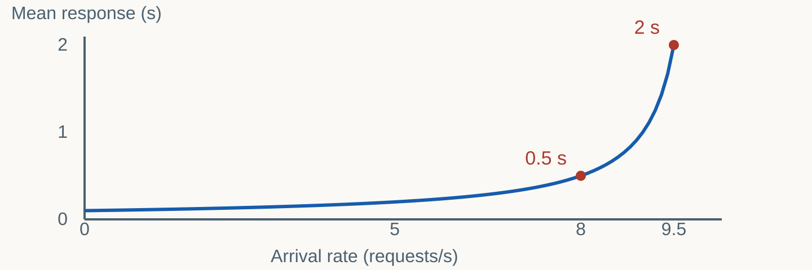
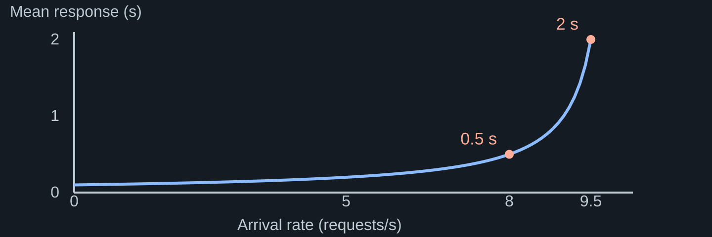
The last acceptable load pointПоследняя приемлемая точка нагрузки
Illustrative capacity sweepИллюстративный свип емкости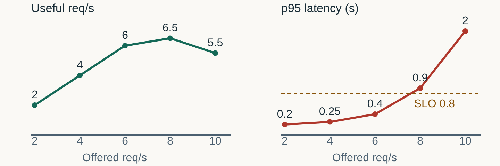
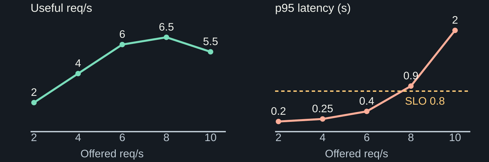
Service time and response time are different clocksВремя обслуживания и время ответа — разные часы
Queueing decompositionДекомпозиция очередейService timeВремя обслуживания
Time the system actively needs to progress the request, under a precisely defined scheduling model.Время, которое система активно тратит на продвижение запроса, при точно определенной модели планирования.
Response timeВремя ответа
Queue residence + service + transfers + buffering as observed at the chosen boundary.Жизнь в очереди + обслуживание + передачи + буферизация, как видно на выбранной границе.
High GPU utilization is not the objectiveВысокая утилизация GPU — не цель
Resource metric ≠ product outcomeМетрика ресурса ≠ продуктовый исход“The GPU is at 99%, so the system is efficient.”«GPU занят на 99%, значит система эффективна.»
Scheduled requests disappear from a blocking testЗапланированные запросы исчезают из блокирующего теста
Illustrative 4-second stallИллюстративный ступор на 4 секунды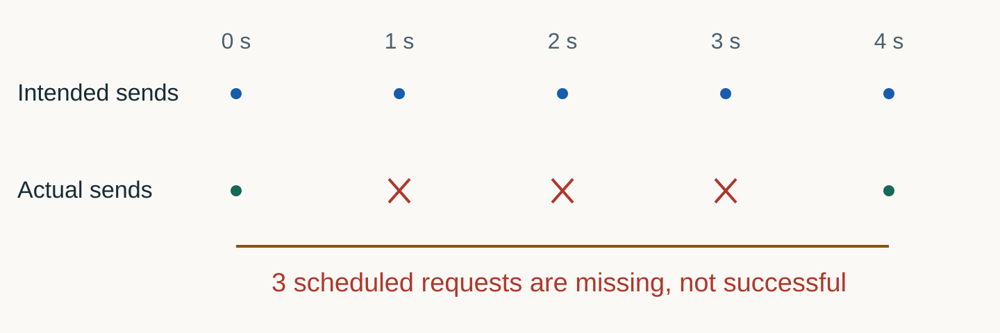
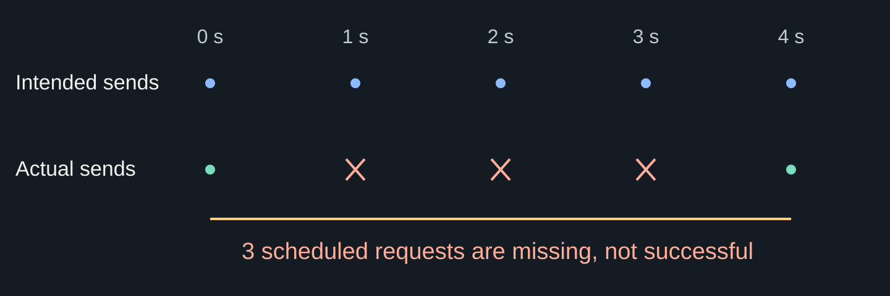
Aggregate percentiles hide workload shiftsАгрегатные перцентили прячут смены нагрузки
Stratify before comparingСтратифицируйте до сравнения| SliceСрез | Primary stressГлавный стресс | CompareСравнивайте |
|---|---|---|
| short in / short outкороткий вход / короткий выход | fixed overhead + TTFTфиксированный оверхед + TTFT | admission and batching delayзадержка допуска и батчинга |
| long in / short outдлинный вход / короткий выход | prefillprefill | input-token binsкорзины входных токенов |
| short in / long outкороткий вход / длинный выход | decode residenceжизнь в decode | ITL and cancellationITL и отмена |
| long in / long outдлинный вход / длинный выход | state + fairnessсостояние + справедливость | reject/OOM ratesдоли отказов/OOM |
Count attempts, not just original user requestsСчитайте попытки, а не только исходные запросы пользователей
Retry amplification · illustrative stable ratesУсиление ретраями · иллюстративные устойчивые скоростиLoad checklist: enough to reproduce the pressureЧек-лист нагрузки: достаточно, чтобы воспроизвести давление
Before plotting resultsДо построения графиков| DeclareДекларируйте | Do not substituteНе подменяйте |
|---|---|
| offered and admitted rateпредлагаемую и допущенную скорость | concurrency aloneодну конкурентность |
| token-length distributionsраспределения длин токенов | one mean promptодин средний промпт |
| deadline/cancel/retryдедлайн/отмена/ретрай | client defaultsдефолты клиента |
| warm state + durationтеплое состояние + длительность | “after warmup”«после прогрева» |
Control the failure loopsКонтролировать циклы отказов
Overload is a feedback system, not a traffic spike.Перегрузка — это система с обратной связью, а не всплеск трафика.

A timeout is not removed work. If the original keeps running and the client retries, one unhappy user becomes multiple attempts.Таймаут — это не убранная работа. Если оригинал продолжает выполняться и клиент ретраит, один несчастный пользователь превращается в несколько попыток.
Original demand and retry trafficИсходный спрос и ретрай-трафик
Illustrative one-retry budgetИллюстративный бюджет в один ретрай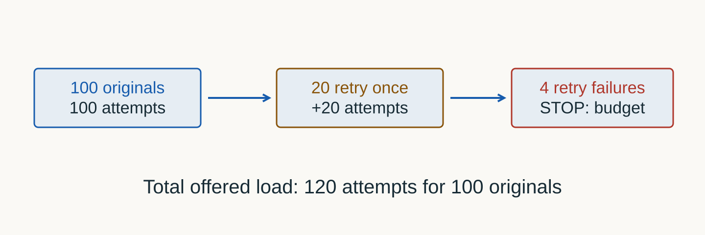
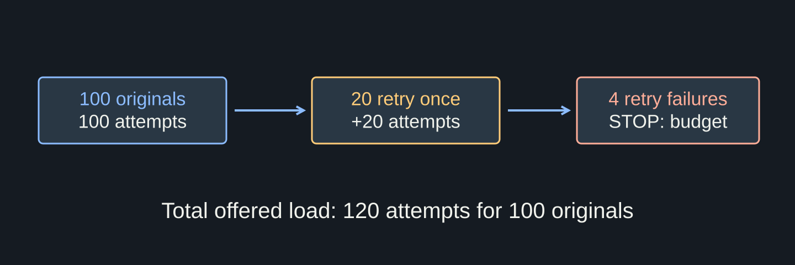
A retry is a budgeted policy decisionРетрай — это бюджетное решение политики
Not an exception handlerНе обработчик исключенийRetry only whenРетрайте только когда
- the operation is safe/idempotentоперация безопасна/идемпотентна
- the remaining deadline is usefulоставшийся дедлайн еще полезен
- the failure is plausibly transientотказ правдоподобно преходящий
- a shared retry budget permits itобщий ретрай-бюджет разрешает
Shape the retryФормируйте ретрай
- bounded attemptsограниченные попытки
- exponential backoff + jitterэкспоненциальный backoff + jitter
- server hints where availableподсказки сервера, где есть
- deduplication or idempotency keyдедупликация или ключ идемпотентности
How many of 64 can meet the deadline?Сколько из 64 успеют в дедлайн?
Interactive fluid burst model · not GPU evidenceИнтерактивная текучая модель бурста · не GPU-свидетельствоAssumes equal service times and FIFO waves; omits prefill/decode, KV, retries and arrival jitter.Предполагает равные времена обслуживания и FIFO-волны; опускает prefill/decode, KV, ретраи и дрожание приходов.
Admission protects a bounded workerДопуск защищает ограниченный воркер
Illustrative slot accountingИллюстративный учет слотов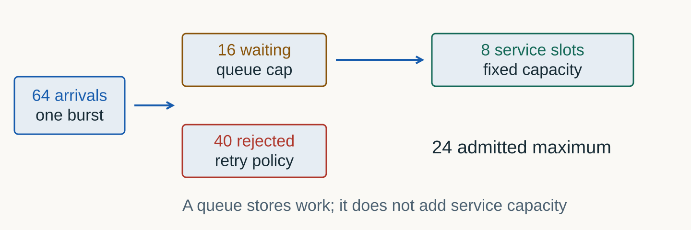
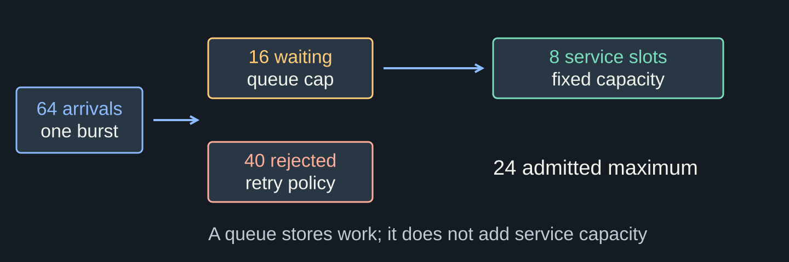
A five-second deadline budgetБюджет дедлайна в пять секунд
Constructed admission decisionСконструированное решение о допуске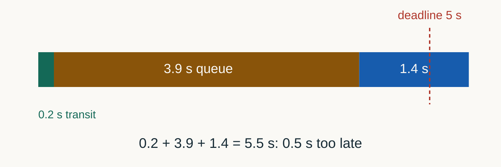
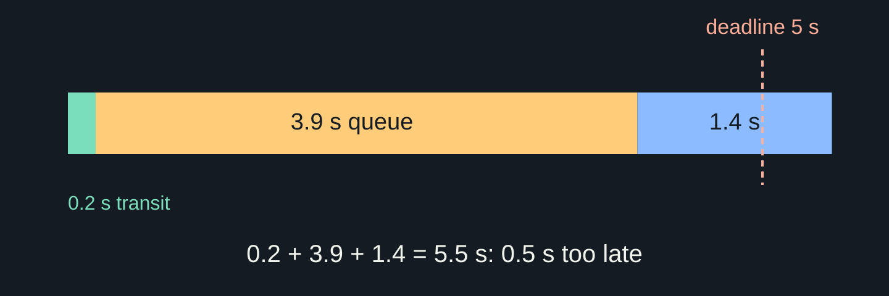
Twenty fast branches can still make a slow answerДвадцать быстрых веток все равно могут дать медленный ответ
All branches required · independent identical success probabilitiesВсе ветки обязательны · независимые одинаковые вероятности успехаThe slowest required branch gates completionЗавершение тормозится самой медленной обязательной веткой
Illustrative parallel dependencyИллюстративная параллельная зависимость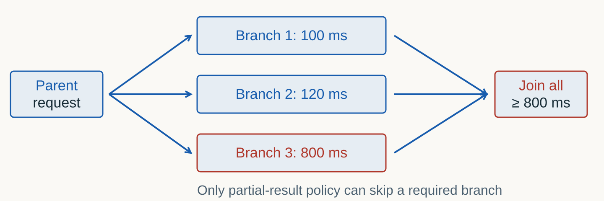
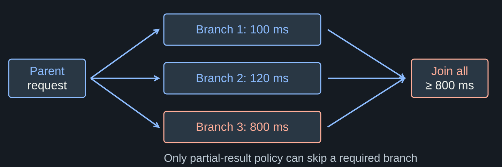
Cached artifacts still need loading and warmupКэшированные артефакты все равно требуют загрузки и прогрева
Illustrative scale-out critical pathИллюстративный критический путь масштабирования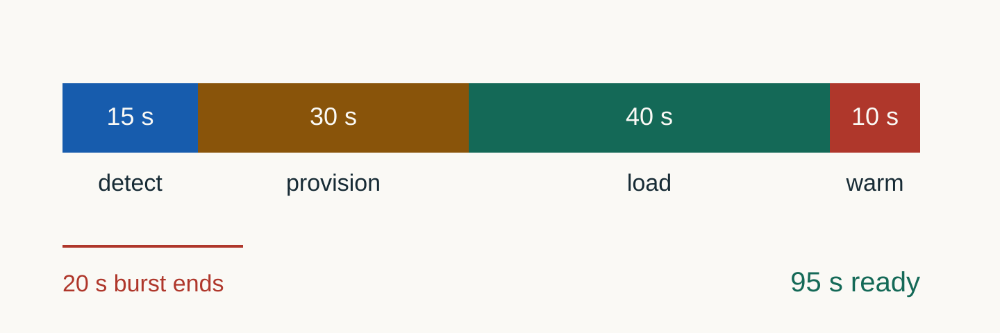
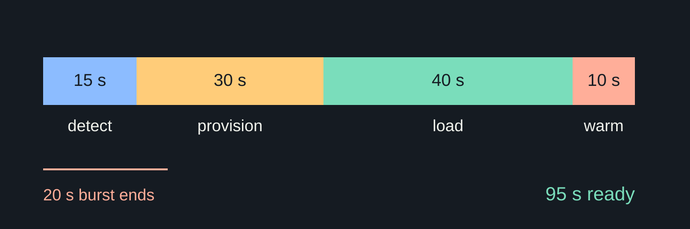
A rollout is a state machineРоллаут — это машина состояний
No traffic before evidenceНикакого трафика до свидетельствShutdown order changes the failure waveПорядок выключения меняет волну отказов
Illustrative release protocolИллюстративный протокол освобождения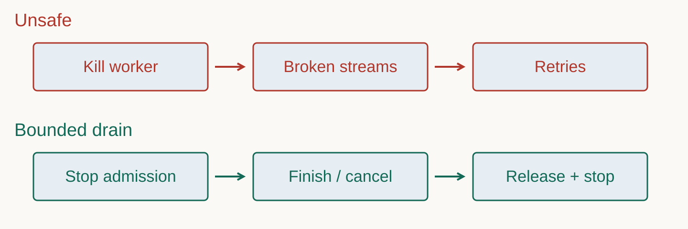
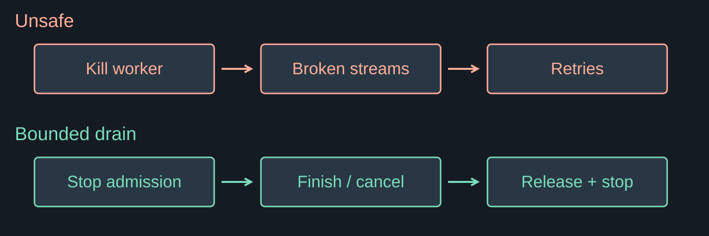
Classify failure by the promise it breaksКлассифицируйте отказ по обещанию, которое он рушит
Detection → actionДетекция → действие| ClassКласс | SignalСигнал | First actionПервое действие |
|---|---|---|
| overloadперегрузка | queue age + rejectsвозраст очереди + отказы | shed / reduce admissionсбрасывать / сужать допуск |
| resource exhaustionисчерпание ресурсов | allocation failuresпровалы аллокаций | protect state, narrow workloadзащищать состояние, сужать нагрузку |
| dependency failureотказ зависимости | downstream spansдаунстрим-спаны | budgeted fallbackбюджетный fallback |
| bad revisionплохая ревизия | canary quality/SLO deltaдельта качества/SLO канарейки | stop rollout / rollbackстоп роллаут / откат |
Reject early enough that accepted work can still succeed.Отказывайте достаточно рано, чтобы принятая работа еще могла успеть.
Choose an architectureВыбрать архитектуру
The correct topology follows workload and failure semantics.Правильная топология следует за семантикой нагрузки и отказов.
Three deployment shapesТри формы деплоя
Logical architecture comparisonСравнение логических архитектур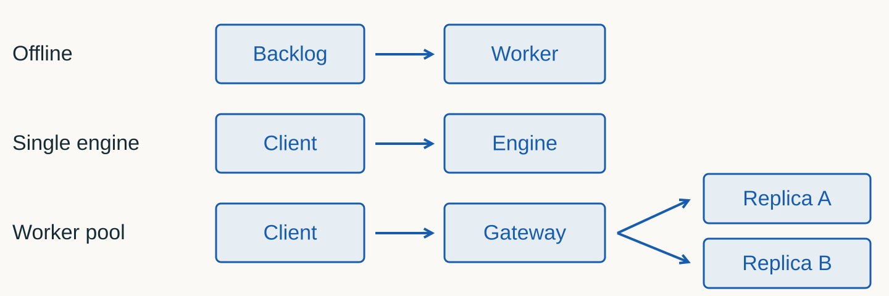
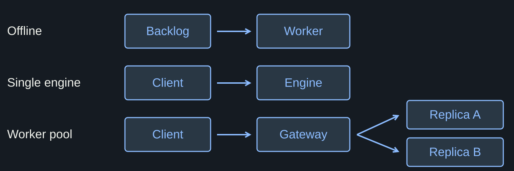
Start with one engine when one engine fits the promiseНачинайте с одного движка, когда одного движка хватает для обещания
Complexity is a costСложность — это издержкаGood fitХорошее совпадение
- one model and policyодна модель и политика
- predictable loadпредсказуемая нагрузка
- failure domain acceptableдомен отказа приемлем
- vertical capacity sufficientвертикальной емкости достаточно
Pressure to splitДавление к разделению
- tenant/model routingмаршрутизация тенант/модель
- independent rolloutsнезависимые роллауты
- horizontal capacityгоризонтальная емкость
- different workload classesразные классы нагрузки
Equal request counts can hide unequal workРавные числа запросов могут прятать неравную работу
Illustrative routing counterexampleИллюстративный контрпример маршрутизации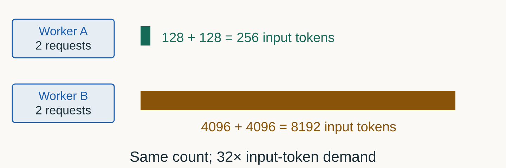
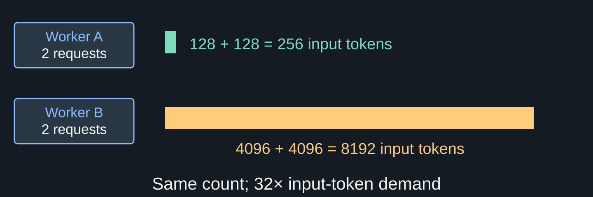
Cache savings can lose to queueingЭкономия кэша может проиграть очередям
Constructed routing decisionСконструированное решение маршрутизации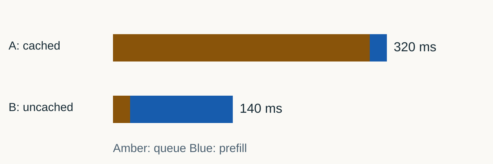
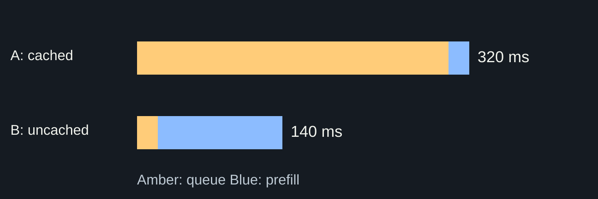
Admission policy changes who waitsПолитика допуска меняет, кто ждет
Illustrative tenant queueИллюстративная тенант-очередьSeparating phases adds a state-transfer boundaryРазделение фаз добавляет границу переноса состояния
Conceptual architectureКонцептуальная архитектураScale on demand pressure, not only device activityМасштабируйтесь по давлению спроса, а не только по активности устройства
Signals have delayУ сигналов есть задержка| SignalСигнал | AdvantageПреимущество | TrapЛовушка |
|---|---|---|
| GPU utilizationутилизация GPU | availableдоступна | late; includes wasteпоздно; включает мусор |
| queue depthглубина очереди | direct pressureпрямое давление | ignores request sizeигнорирует размер запроса |
| queue ageвозраст очереди | deadline proximityблизость дедлайна | already reactingсрабатывает постфактум |
| predicted token workпредсказанная токен-работа | closer to demandближе к спросу | prediction errorошибка предсказания |
New capacity arrives after several separate delaysНовая емкость приходит после нескольких отдельных задержек
Illustrative serial scale-out critical pathИллюстративный серийный критический путь масштабированияArchitecture starts from product behaviorАрхитектура растет из поведения продукта
Four live archetypesЧетыре живых архетипа| ProductПродукт | Dominant promiseДоминирующее обещание | Architecture pressureАрхитектурное давление |
|---|---|---|
| chat assistantчат-ассистент | TTFT + smooth streamTTFT + ровный стрим | burst admission, cancelбурстовый допуск, отмена |
| batch summarizerбатч-суммаризатор | cost / completion horizonстоимость / горизонт завершения | backlog schedulingпланирование бэклога |
| coding copilotкодинг-копилот | very short deadlineочень короткий дедлайн | aggressive stale-work cancelагрессивная отмена устаревшей работы |
| fan-out agentвеерный агент | end-to-end success tailхвост сквозного успеха | deadline propagationраспространение дедлайна |
There is no context-free “best serving architecture”Не существует свободной от контекста «лучшей архитектуры сервинга»
Optimization needs a contractОптимизации нужен контракт“Production systems use microservices, disaggregation, and autoscaling.”«Продакшен-системы используют микросервисы, дезагрегацию и автоскейлинг.»
Choose the smallest topology that satisfies the contractВыбирайте наименьшую топологию, удовлетворяющую контракту
Decision recordЗапись решения| RecordЗапись | QuestionВопрос |
|---|---|
| workloadнагрузка | which demand and length distributions?какие распределения спроса и длин? |
| objectiveцель | which SLO/cost/quality constraint dominates?какое ограничение SLO/стоимость/качество доминирует? |
| stateсостояние | where does per-request/model state live?где живет состояние запроса/модели? |
| failureотказ | what degrades, retries, drains, or rolls back?что деградирует, ретраит, дренирует или откатывается? |
Measure before optimizingИзмерить до оптимизации
If the experiment cannot be repeated, the number cannot be trusted.Если эксперимент нельзя повторить, числу нельзя верить.
Freeze six things before a runЗаморозьте шесть вещей до прогона
Experiment contractКонтракт эксперимента| LayerСлой | Record exactlyЗаписывайте точно |
|---|---|
| modelмодель | artifact revision, tokenizer, precision, context limitревизия артефакта, токенизатор, точность, лимит контекста |
| runtimeрантайм | engine/container/driver versions and launch commandверсии движка/контейнера/драйвера и команда запуска |
| hardwareжелезо | device, count, memory, topology, power modeустройство, количество, память, топология, режим питания |
| workloadнагрузка | arrivals, token distributions, sampling, seed, deadlineвходящие запросы, распределения токенов, сэмплирование, сид, дедлайн |
| measurementизмерение | boundaries, warmup, duration, percentiles, failure rulesграницы, прогрев, длительность, перцентили, правила отказов |
| artifactартефакт | raw events, summary, commit, timestampсырые события, сводка, коммит, метка времени |
The workload begins with an exact requestНагрузка начинается с точного запроса
Concrete payloadКонкретная полезная нагрузкаRequestЗапрос
{
"model": "served-model",
"messages": [{"role":"user",
"content":"Explain backpressure."}],
"temperature": 0,
"max_tokens": 128,
"stream": true
}Record beside itЗаписывайте рядом
- rendered prompt token countчисло токенов собранного промпта
- actual output tokens and stop reasonфактические выходные токены и причина остановки
- client deadline and disconnectдедлайн и разрыв клиента
- request and trace identifiersидентификаторы запроса и трейса
A trace becomes a metric reportТрейс становится метрическим отчетом
Constructed single-request recordСконструированная запись одного запросаA fast success percentile can hide failureБыстрый перцентиль успехов может прятать отказы
Constructed 100-attempt comparisonСконструированное сравнение 100 попытокSix ways to produce a persuasive wrong answerШесть способов получить убедительный неправильный ответ
Audit before comparingАудит до сравнения| TrapЛовушка | BiasСмещение | RepairПочинка |
|---|---|---|
| closed-loop onlyтолько замкнутый контур | hides overloadпрячет перегрузку | add scheduled open-loop sweepдобавьте запланированный свип открытого контура |
| drop failuresвыбрасывать отказы | improves tailsулучшает хвосты | report failure/reject ratesсообщайте доли отказов/отклонений |
| warm cache onlyтолько теплый кэш | hides lifecycle costпрячет стоимость жизненного цикла | label warm and cold separatelyмечайте теплое и холодное отдельно |
| different lengthsразные длины | changes workменяет работу | replay identical workloadповторяйте идентичную нагрузку |
| client bottleneckбутылочное горлышко клиента | caps offered loadограничивает предлагаемую нагрузку | measure generator headroomмерьте запас генератора |
| one short runодин короткий прогон | captures luckловит удачу | repeat; retain raw eventsповторяйте; храните сырые события |
A bounded experiment has a stopping ruleУ ограниченного эксперимента есть правило остановки
Illustrative measurement workflowИллюстративный процесс измеренияDeliverable: a pinned single-request baselineРезультат: закрепленный бейзлайн одного запроса
Topic 01 · no capacity claimТема 01 · без заявления о емкости| ArtifactАртефакт | AcceptanceПриемка |
|---|---|
| baseline JSONбейзлайн JSON | model revision, runtime, GPU, token counts, warm and cold intervalsревизия модели, рантайм, GPU, счетчики токенов, теплые и холодные интервалы |
| boundary traceграничный трейс | owners, observable timestamps and cancellation pathвладельцы, наблюдаемые метки времени и путь отмены |
| reflectionрефлексия | explain why chunks are not tokens and why one request proves no capacity envelopeобъяснить, почему чанки не токены и почему один запрос не доказывает огибающую емкости |
| submission repoрепозиторий сабмишена | private copy of the public example, judge access confirmed, contract checks + GPU smoke, then round-01 tagприватная копия публичного примера, подтвержденный доступ к судье, контрактные проверки + GPU-smoke, затем тег round-01 |

Production readiness is not infinite capacity. It is a declared envelope, controlled admission, cancellable work, and evidence that accepted requests meet the promise.Продакшен-готовность — это не бесконечная емкость. Это заявленная огибающая, контролируемый допуск, отменяемая работа и свидетельства, что принятые запросы исполняют обещание.
Primary reading and specificationsОсновное чтение и спецификации
Continue in self-studyПродолжайте в самостоятельном изучении- Dean, J.; Barroso, L. A. “The Tail at Scale.” Communications of the ACM, 2013.Dean, J.; Barroso, L. A. «The Tail at Scale». Communications of the ACM, 2013.
- HdrHistogram documentation: coordinated-omission correction and interval recording.Документация HdrHistogram: поправка на согласованное упущение и запись интервалов.
- IETF RFC 9110, HTTP Semantics; WHATWG Server-Sent Events.IETF RFC 9110, HTTP Semantics; WHATWG Server-Sent Events.
- OpenTelemetry GenAI semantic conventions (development status): spans, metrics, events.Семантические конвенции OpenTelemetry GenAI (статус разработки): спаны, метрики, события.
- Kwon et al. “Efficient Memory Management for Large Language Model Serving with PagedAttention.” SOSP 2023.Kwon et al. «Efficient Memory Management for Large Language Model Serving with PagedAttention.» SOSP 2023.
- Kubernetes probes and Pod lifecycle.Пробы Kubernetes и жизненный цикл пода.
Can you make the promise falsifiable?Можете ли вы сделать обещание фальсифицируемым?
Write one workload sentence, one SLO sentence, and the exact events needed to prove or disprove it. Next: why prefill and decode stress hardware differently.Напишите одно предложение о нагрузке, одно предложение SLO и точные события, нужные, чтобы доказать или опровергнуть. Далее: почему prefill и decode нагружают железо по-разному.